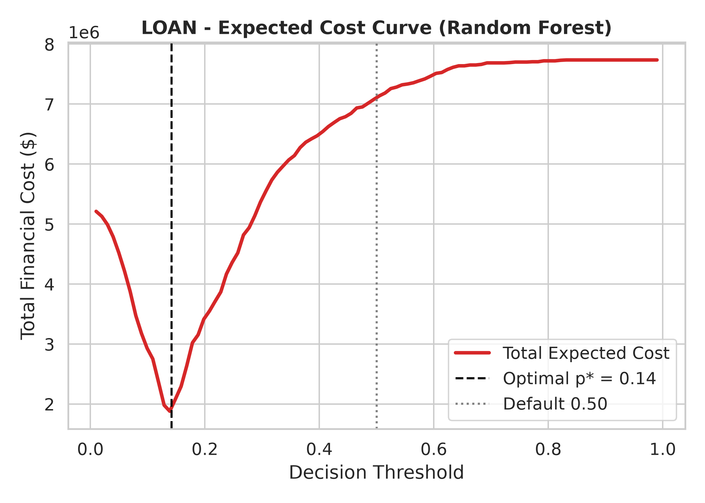

📈 Key Empirical Curves
Selected diagnostic plots comparing standard classification thresholds against cost-optimal frontiers.

Precision-Recall Curves (Fraud)
Ensemble Blend and CatBoost dominate the 0.58% extreme imbalance regime with PR-AUC of 0.8398.

Expected Cost vs. Threshold (Fraud)
Visualizes the steep economic penalty of standard 0.50 cutoff vs the cost-optimal minimum at p* = 0.023.

Expected Cost vs. Threshold (Loan)
Demonstrates 73.41% ($5.21M) loss reduction achieved by shifting from 0.50 to p* = 0.142.